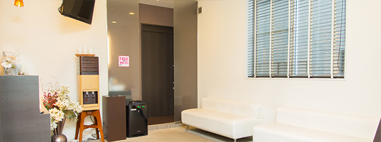
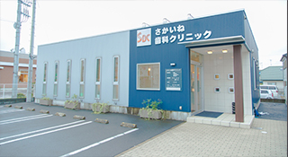
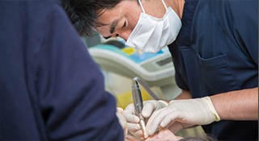
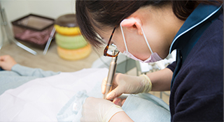

feature当院の特徴
さかいね歯科クリニックの特徴

当院は通いやすい診療時間を設定するとともに、プライバシーに配慮した「半個室の診療室」や高度な治療を可能にする「精密機器を完備」した、安心の診療をご提供する歯科医院です。そのほか、虫歯や歯周病の予防にも力を入れ、定期検診を活用していただくことでみなさんのお口の健康をサポートしています。
当院は通いやすい診療時間を設定するとともに、プライバシーに配慮した「半個室の診療室」や高度な治療を可能にする「精密機器を完備」した、安心の診療をご提供する歯科医院です。そのほか、虫歯や歯周病の予防にも力を入れ、定期検診を活用していただくことでみなさんのお口の健康をサポートしています。
なお、難症例だと判断した際には、信頼のおける大学病院をご紹介しています。お口まわりのお悩みは何でもお気軽にご相談ください。
特徴01 通いやすい診療時間と立地

お口の健康維持のために歯科通院は必要ですが、診療時間が短かったり診療日数が少なかったりする歯医者では、なかなか定期的に通うのは難しくなるでしょう。当院は平日20時までの診療に対応しているほか、土日の診療も可能です。多様化するみなさんのライフスタイルに合わせて、気軽に通っていただけるような医院づくりに努めています。
また、商業施設の多い大通り沿いにあるため、地理的にとても分かりやすいうえ、駐車場も9台分完備。お車でも安心してご来院いただけます。
特徴02 重度の虫歯も根管治療で解決

虫歯が重度まで進行すると、歯根の中にある根管（こんかん）という細い管から虫歯菌に冒された神経や血管を取り除き、薬を詰める,「根管治療」が必要です。当院では、根管治療に力を入れており、歯に空いた穴を埋める際に「MTAセメント」という優れた薬剤を使用しています。
また、薬剤を詰める方法には、高い技術が求められる「バーティカル法」を採用。薬を緊密に詰め、根管治療の成功率を高めています。
特徴03 精密な検査が可能な歯科用CT採用
特徴04 歯科衛生士による予防メンテナンス体制

虫歯や歯周病は予防可能な病気です。予防の基本は毎日のブラッシングによるセルフケアとなりますが、そこに加えていただきたいのが歯科医院で行う定期的なプロフェッショナルケアです。
定期検診を受けていただければ、口腔ケアのプロフェッショナルである歯科衛生士が歯や歯ぐきをチェックして、専門的なクリーニングを実施します。また、セルフケアでしっかり汚れを落とせるよう、ブラッシング指導も実施。
歯の健康を保つためには「治療」よりも「予防」が大切です。当院では予防・メンテナンス体制を整えていますので、定期検診には欠かさずお越しください。